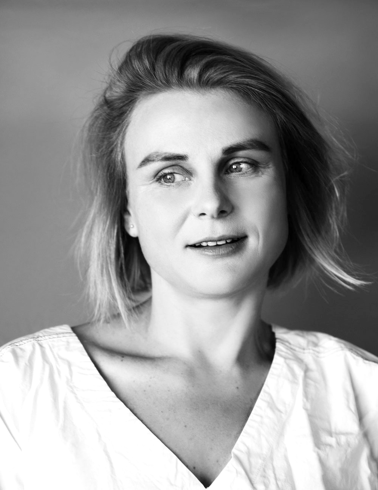

Photo by Aliona Kuznetsova
About
I'm a designer and graphic artist. Lines, shapes, spots, and spaces are my essential elements. I aim for compositions that feel balanced, harmony that feels exact, and production that stays clean. For me, less is always more.
I think through images, rhythm, and contrast. Ideas come from observation, movement, and everyday details. I enjoy shaping visual stories that feel quiet, clear, and honest — where every element has a reason to exist.